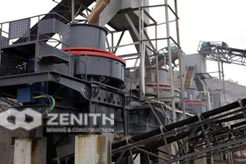
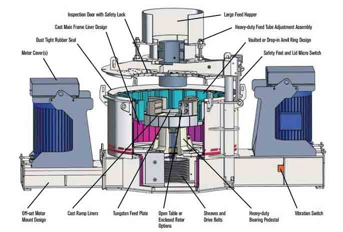
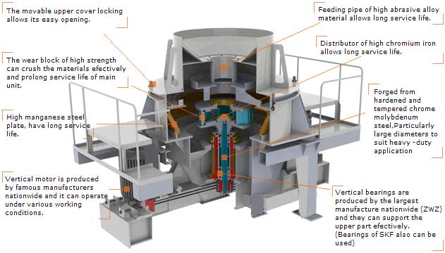

Sand Making Mahcine
Sand Making Machine is a newly researched equipment, with international advanced level. Technology and modern processing equipment make it a leading role in this industry.It is widely used for artificial sand, in metal and non-metal ores, cement, refractory material, bauxite, silicon carbide, glass material, building material. It is working with single electric motor.new generation sand making machine,applied for powder process of material product including metal and nonmetal ore, fireproof material, bauxite, diamond dust, architectural materials, artificial sand and all kinds of metal and ore materials.
Structure of Sand Making Mahcine
Sand making machine structure is mainly composed of feed hopper, distributor, vortex crushing cavity, impeller, shaft assembly, base, transmission device and motor of seven parts.Sand making machine form varies according to the manufacturer.So we at the scene of the system of different sand, you can see different shapes of sand making machine, on the one hand, sand making machine is different, on the other hand is different.
Sand Making Mahcine Features
- The theory of stone hitting ensures low energy consumption and high crushing efficiency.
- The process of crushing is intense with high crushing efficiency. Presently, this type of sand maker is the most popular in the market.
- The consumption of quick-wear parts is low. The sand maker is designed with the best crushing angle within the cavity and causes little friction with wear-resistant parts.
- The sand maker is so environmentally-friendly that it causes little noise and pollution when operating. The operating sound is below 75 db and no dust is created.
Working principle of Sand Making Mahcine
The materials fall into the impeller from the head of the machine and with the function of high-speed centrifugal force, they strongly hit against and highly grind the other parts of the materials bypass flowing around the impeller in an umbrella form. After mutual impaction and between the impeller and the machine shell, the materials will move like a vortex and will be impacted, rubbed and pulverized many times. Then they will come to the required fineness controlled by screening equipment, and discharge from the bottom of the VSI Sand maker for new generation sand making machine.
